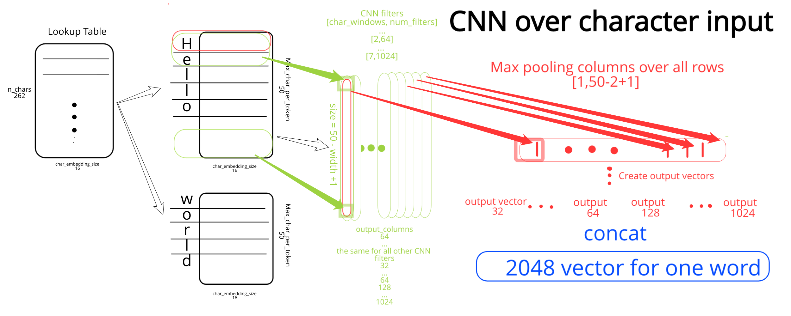
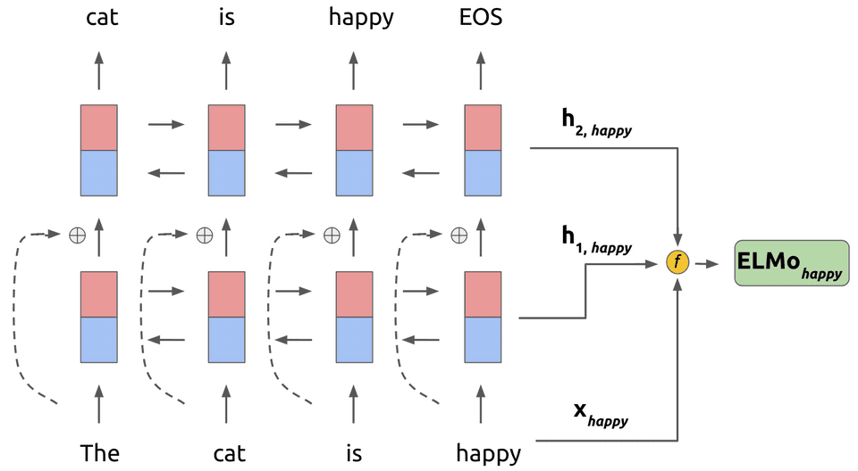

模型详解
论文中分两个训练过程：
- 生成字符级别的embedding，根据字符级别的embedding来生成上下文无关的word embedding
- 使用bi-lstm语言模型生成上下文相关的word embedding
下面我们分别详细介绍这两个训练过程对应的模型：
char cnn embedding
参考论文：Character-Aware Neural Language Models

通过上图的CNN结构，得到了维度为2048的word embedding。
在这个CNN结构上，还应用了其他trick，比如highway network，projection layer。
highway network
假设通过卷积层得到单词k的向量为，highway network对应的function为，此处的g对应非线性激活函数，通常为relu，而为sigmoid函数：
Projection layer
projection layer就是把前面的词向量维度适配到bilstm语言模型要求的词向量维度大小。
bilstm语言模型
ELMo使用双层BiLSTM来训练语言模型，然后通过线性组合不同lstm层的word vectors, 得到最终的word embedding vectors。线性组合公式如下所示：
公式(1)的直观解释如下图所示：

语言模型就是简单的两层bilstm语言模型，现在的重点是如何学习式(1)中的参数以及。
如何学习以及？
通过阅读代码来理解如何学习这些参数(函数weight_layers)：
1 | def weight_layers(name, bilm_ops, l2_coef=None, |
三种使用方式
- Compute representations on the fly from raw text using character input. This is the most general method and will handle any input text. It is also the most computationally expensive.
- Precompute and cache the context independent token representations, then compute context dependent representations using the biLSTMs for input data. This method is less computationally expensive then #1, but is only applicable with a fixed, prescribed vocabulary.
- Precompute the representations for your entire dataset and save to a file.
官方提供的tensorflow版本的elmo模型代码，结构如下：
1 | ├── bilm // ELMo is implemented under this folder. |
关于elmo的使用方式的更多细节，请参考:usage_xxx.py这三个文件即可。
使用示例
github:elmo-trainging-tutorial